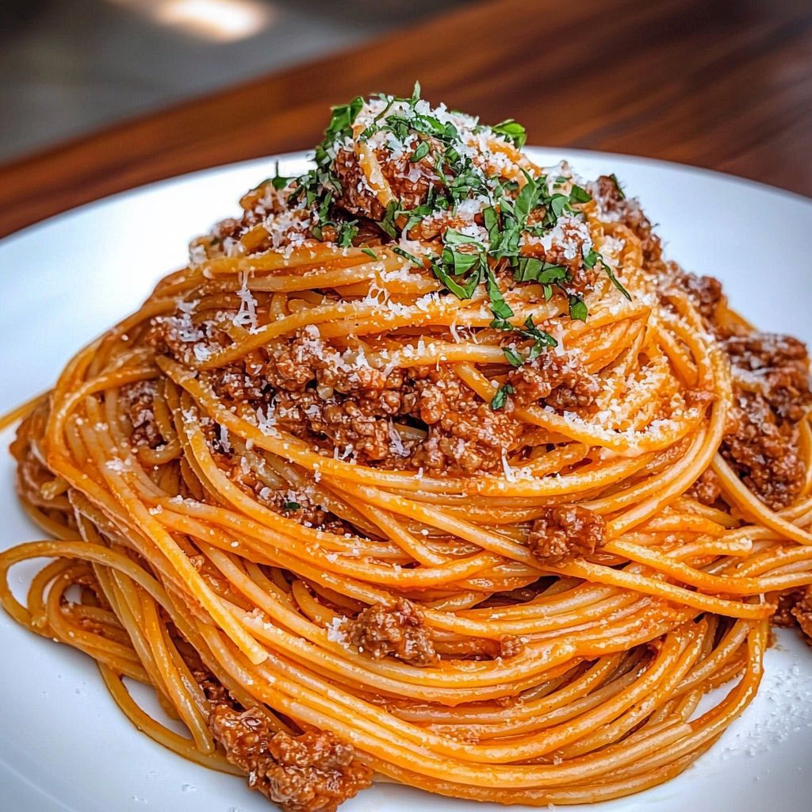

Receita de Macarrão com Carne Moída
Serve 4 pessoas
Imagem da Receita

Clique aqui para abrir a imagem
Ingredientes
- 1 pacote (500g) de macarrão (espaguete ou penne)
- 300g a 500g de carne moída
- 1 colher (sopa) de óleo ou azeite
- 1/2 cebola picadinha
- 2 dentes de alho amassados
- 1 sachê (340g) de molho de tomate
- 1 tomate picado (opcional)
- Sal a gosto
- Pimenta-do-reino a gosto
- Orégano ou cheiro-verde a gosto
- 1/2 xícara de água
Modo de Preparo
-
Cozinhe o macarrão:
Ferva 2 litros de água com 1 colher (sopa) de sal.
Coloque o macarrão e cozinhe por 8 a 10 minutos.
Escorra e reserve.
Dica: não lave o macarrão depois de escorrer.
-
Prepare o molho:
Refogue a cebola no óleo até ficar transparente.
Acrescente o alho e mexa por 30 segundos.
Coloque a carne moída e cozinhe por 5 a 7 minutos.
Tempere com sal e pimenta.
Adicione o molho de tomate, o tomate e a água.
Coloque orégano ou cheiro-verde.
Cozinhe por 5 a 10 minutos em fogo baixo.
-
Finalização:
Misture o macarrão no molho ou sirva o molho por cima.
Finalize com queijo ralado.
Menu